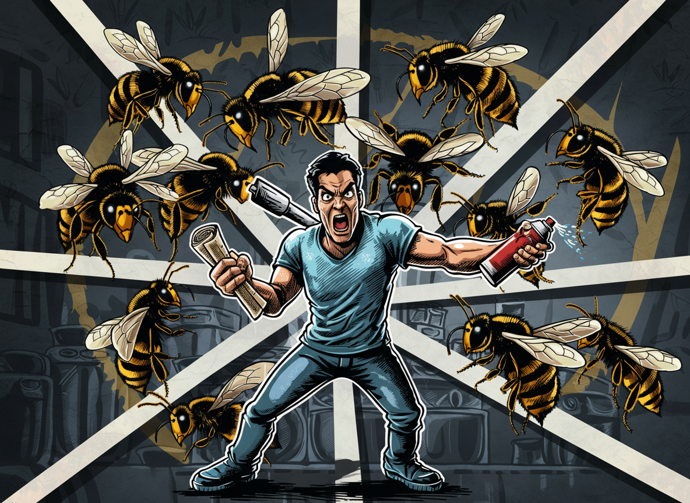
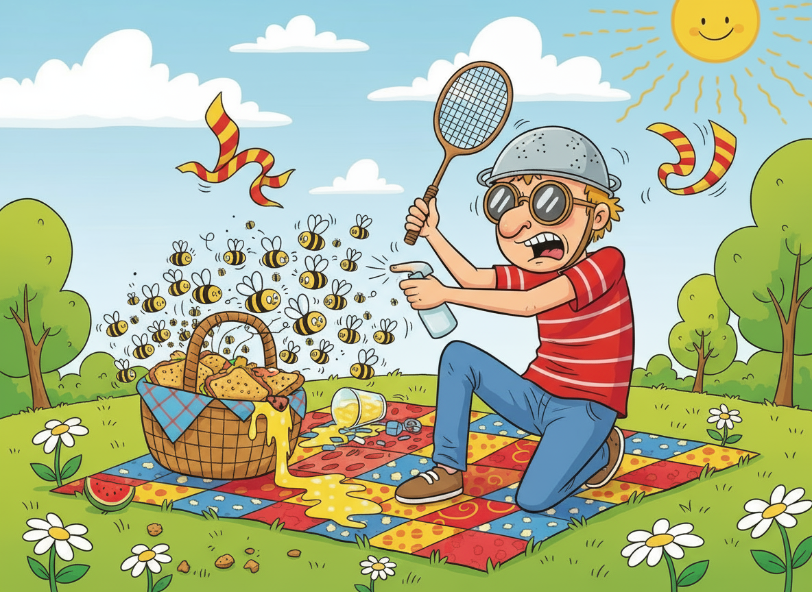
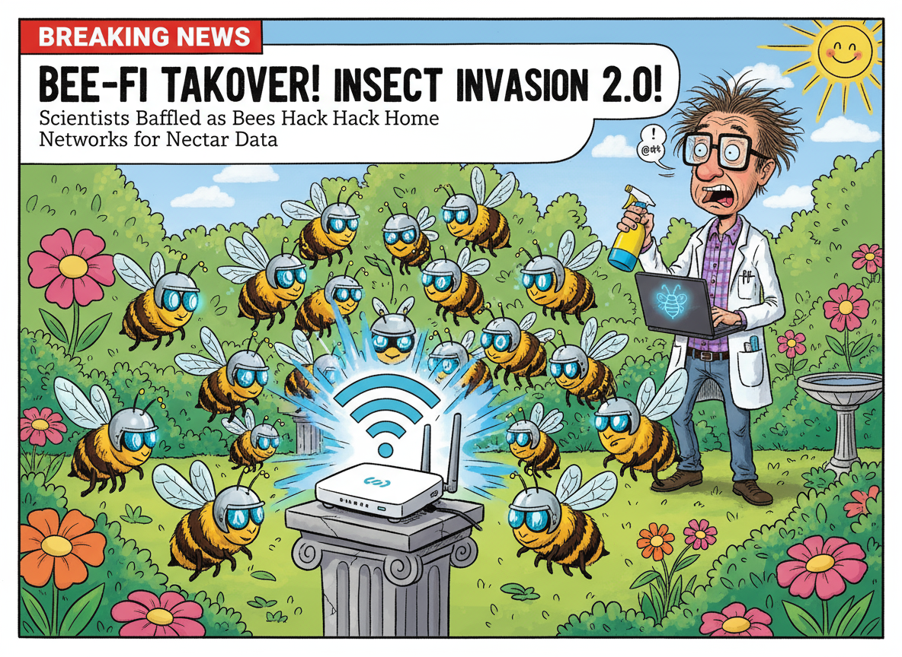

Få hjælp til bæstet her
En bi på krigsstien? Fortvivl ej. Her lærer du at holde hovedet koldt, selv når det summer højt.
Se mereAlt du skal vide for at overleve sommerens summende fjender – og bevare værdigheden undervejs.
En bi på krigsstien? Fortvivl ej. Her lærer du at holde hovedet koldt, selv når det summer højt.
Se mereDel din bi-katastrofe her! Fortæl hvad der skete, hvad du prøvede, og hvad du aldrig gør igen.
Se mereEn mand. En bi. En fluesmækker. Historien om mod, kløe og stædig værdighed.
Der findes få ting, der kan knække et voksent menneskes værdighed som et bistik. Ét sekund nyder du solen med kaffe og croissant, det næste laver du ninja-bevægelser med en avis som sværd. Når naturen går til angreb, gælder kun ét princip: brug, hvad du har. Kasket som skjold, køkkenrulle som fægtevåben, vandpistol som hævnredskab. Hårspray virker kun, hvis du ikke sætter pris på dine øjenbryn.
Jeg husker stadig Jens fra Varde. Han skulle bare grille, men endte i en fuld kamp mod én stædig bi – bevæbnet med fluesmækker og citronvand. Da støvet lagde sig, stod han der stukket og klistret, men med et blik, der sagde: “Jeg tabte måske slaget, men ikke æren.”
Moralen er enkel: Du kan ikke vinde over bierne, men du kan i det mindste gøre det med stil – og et plaster klar i lommen.
En feltmanual til picnic-overlevende.
Sommeren lokker os ud i det fri med løfter om sol, frisk luft og kartoffelsalat. Men under den idylliske overflade lurer fjenden: bier, hvepse og alt med vinger, der elsker din saftevand mere end du gør. Overlevelse kræver disciplin, strategi – og en vis mængde værdighed, hvis du vil undgå at blive kendt som “ham der løb skrigende fra en myg.”
Første regel i feltet: beskyt madpakken. Pak den stramt, dæk søde drikke, og hold marmeladen under konstant bevogtning. Anden regel: red dine venner, men kun hvis du kan gøre det uden at spilde din kaffe. Og tredje regel – den vigtigste – forbliv rolig. Panik er biernes ilt. Træk vejret, justér solbrillerne, og lad som om du har styr på situationen, selv når du kravler ind under et tæppe i panik.
For veteraner i felten er hævn sjældent løsningen. Bierne vinder altid på antal og moral. I stedet må man acceptere nederlaget med rank ryg og kløende ankel. Som en vis picnic-kommandør engang sagde: “Du kan miste din mad, dit mod og din mayonnaise — men aldrig din værdighed. Og husk: hævn smager sødt, men honning smager bedre.”
Bier udvikler stikkevåben med Wi-Fi-forbindelse
erden er i chok, efter forskere fra det fiktive Nordisk Institut for Naturkatastrofer og Kaffe har offentliggjort en rapport, der hævder, at bier nu samarbejder digitalt. Ifølge studiet har flere kolonier udviklet en form for “bi-fi” – et trådløst netværk, der gør det muligt at koordinere stikangreb med millisekunds præcision. “Vi har registreret signaler fra bistader, der matcher mønstre kendt fra militære droner,” udtaler professor Bjarne Lynge, mens han febrilsk sprayer sig med citronduft. “Det er kun et spørgsmål om tid, før de kan logge på vores routere.”
Rapporten anbefaler, at man holder alle søde drikke mindst to meter fra internetudstyr og undgår parfumer med navne som Honey Love eller Bee Mine. Enkelte borgere er allerede begyndt at beskytte sig ved at bære sølvpapirshatte og kommunikere via røgsignaler for at undgå digitale bistik.
Myndighederne maner dog til ro. “Der er ingen grund til panik,” udtaler Miljøstyrelsen i en pressemeddelelse, “men vi anbefaler, at man ikke provokerer bierne… eller stiller spørgsmål om 5G.” Imens har bierne selv, gennem deres PR-afdeling (en meget forvirret biavler i Holstebro), udsendt et kort statement: “Vi ønsker kun fred – og lidt sukker.”